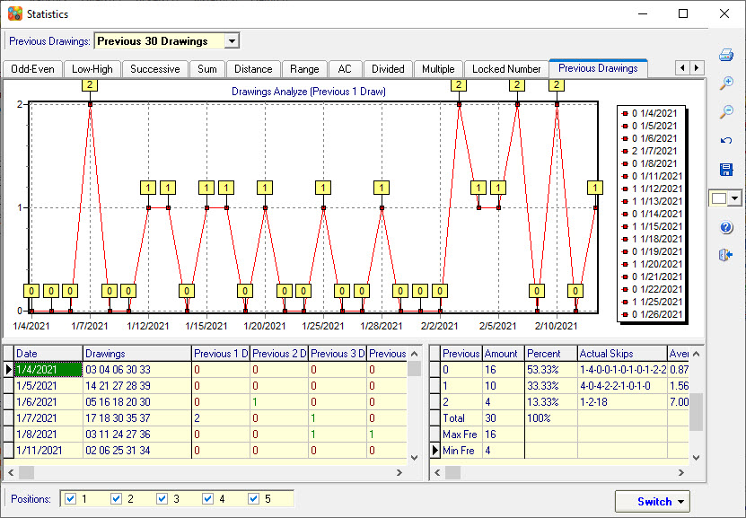

Previous Drawing Analysis |
Click menu->Statistics->Previous Drawing to open the Prior Drawing
analysis window.
Count of the numbers repeats found in the previous draw winning combination.
Previous 1 Draw: Counts of the numbers repeats found in the previous 1 draw winning combination.
Previous 2 Draw: Counts of the numbers repeats found in the previous 2 draw winning combination.
Previous 3 Draw: Counts of the numbers repeats found in the previous 3 draw winning combination.
Previous 4 Draw: Counts of the numbers repeats found in the previous 4 draw winning combination.
Previous 2 Draws: Counts of the numbers repeats found in the previous 1 draw + previous 2 draw winning combinations.
Previous 3 Draws: Counts of the numbers repeats found in all previous 3 draws winning combinations.
Previous 4 Draws: Counts of the numbers repeats found in all previous 4 draws winning combinations.
Previous 5 Draws: Counts of the numbers repeats found in all previous 5 draws winning combinations.

Home
Page: http://www.samlotto.com
Support:support@samlotto.com
Copyright: © SamLotto Lottery Software Team All rights reserved.